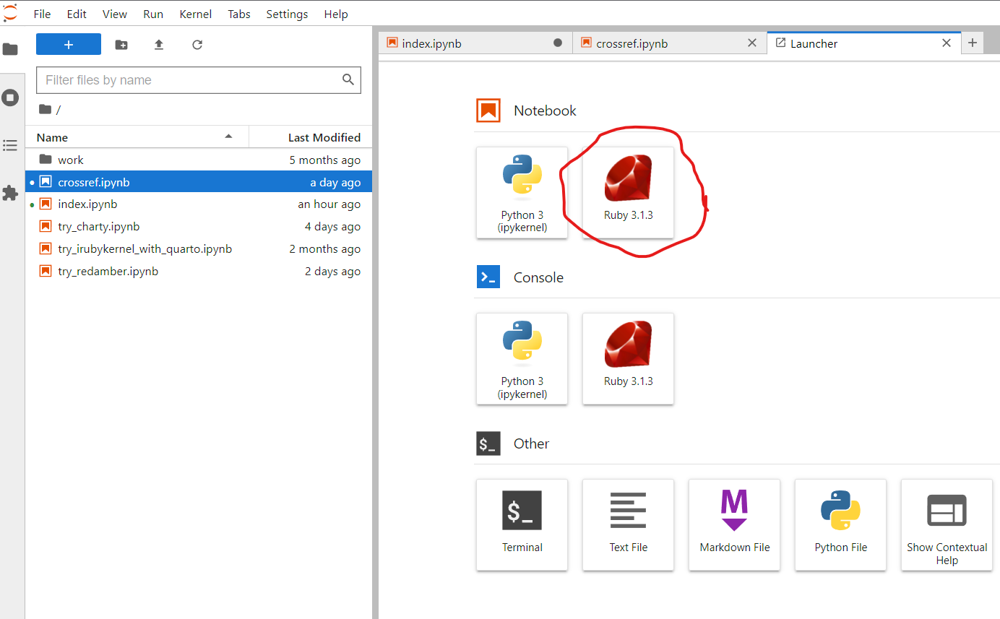
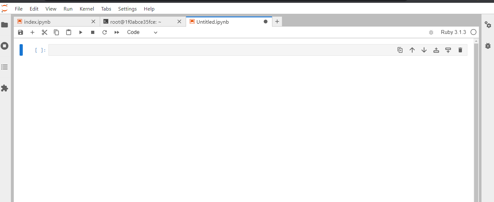
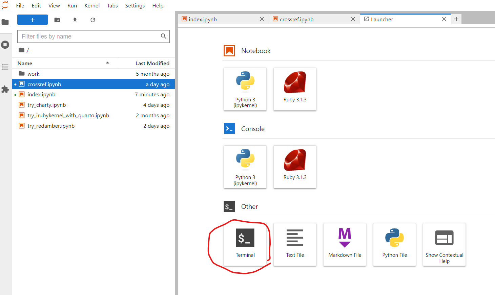
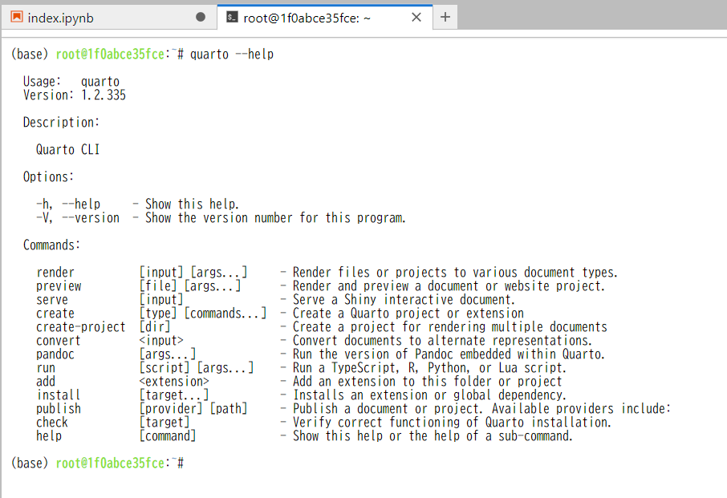

RubyDataをQuartoと組み合わせて用いる方法と意義
このウェブサイトは何を説くものか？
このウェブサイトでは RubyData エコシステムで Quarto を「用いる方法」と、「用いるとどのような利点があるのか？」を説明します。
以下では Windows と PowerShell の最新バージョンを用いることを想定しています。
RubyData エコシステムで Quarto を用いる方法
RubyData エコシステムを自分でセットアップすることは難しいです。
そのためここでは Docker を用いてセットアップ済の環境を利用する方法を紹介します。
その環境には Quarto も追加済であり、容易に「RubyData エコシステム + Quarto の環境」を利用することができます。
Docker のセットアップは、こちらのリンク を参考に行ってください。
Docker が使えるようになったら、下記のコマンドを PowerShell 中で実行してください。
curl -L -O https://github.com/kozo2/quarto4rubydata/archive/refs/heads/main.zip
Expand-Archive main.zip
cd .\main\quarto4rubydata-main\
docker build -t quarto4rubydata .
docker run -it --rm -p 8888:8888 quarto4rubydata jupyter notebook --NotebookApp.default_url=/lab/ --ip=0.0.0.0 --port=8888 --allow-root --NotebookApp.token=''上記のコマンドが実行できたら、ウェブブラウザで http://localhost:8888 を開いてください。 すると下記画像のような JupyterLab 画面が見えるはずです。
解説字幕CC を付けた YouTube のビデオもありますので、そちらも参考にしてください。

あとは上記画像の中の赤丸の Ruby アイコンをクリックすると RubyData の gem がセットアップ済の iruby notebook が使えます。
解説字幕CC を付けた YouTube のビデオもありますので、そちらも参考にしてください。

Quarto を使うには
Quarto は、この JupyterLab 内のターミナルから quarto コマンドを実行することで利用できます。
JupyterLab でターミナルを使うには下記画像の赤丸をクリックします。
解説字幕CC を付けた YouTube のビデオもありますので、そちらも参考にしてください。

あとはターミナル内で quarto --help コマンドを実行し、quarto コマンドが利用できることを確認しましょう。

Quarto を用いるとどのような利点があるのか？
Quarto を用いると Jupyter でも R Markdown のように「Markdown の拡張記法(qmd)の利用」と「(Ruby)コードの実行」が「一処で行える」ようになります。
またその ipynb ファイルを quarto コマンドの入力として与えると、Word、PDF、HTML、PowerPoint その他の形式で出力することができます。
qmd を用いると、科学技術出版に欠かせない「図表のクロスリファレンス」の自動生成を (Ruby) コードと紐付けて行えるようになります。
上記の具体例を知るには下記のページへ進んでください。